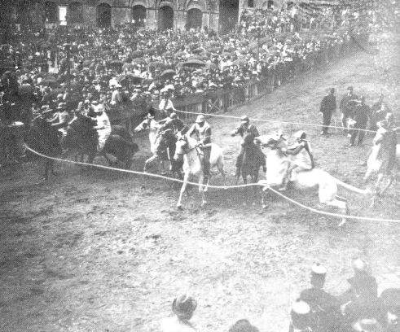

|
Le ultime prove
Sabato sera moltissimo pubblico assistè
alla prova generale, la quale offre
uno speciale interesse. La corsa infatti
riuscì benissimo e fu vinta dalla contrada
della Tartuca.
Fin dalle ore 8 di ieri mattina il
Campanone della storica torre del Mangia
aveva suonato a festa. La città era tutta
adorna di drappi e bandiere. Ai confini
delle contrade ed alle abitazioni del capi
di esse sventolavano altre bandiere, molto
ammirate da coloro che visitavano per
la prima volta la nostra città in occasione
del Palio.
Un effetto meraviglioso, come sempre,
presentava la nostra bellissima Piazza
del Campo, che si era riempita di
pubblico moltissimo tempo avanti lo spettacolo.
Le ore 19 erano suonate da poco
all'orologio della torre del Mangia, quando
fu dato il segnale dell'uscita dei fantini
dal portone del Palazzo Comunale.
Il Palio, artistico e bellissimo lavoro
del giovane pittore sig. Aldo Piantini, il
quale vinse il concorso indetto per il
bozzetto fra gli allievi dell'Istituto di
Belle Arti, venne portato in trionfo nella
contrada vincitrice, dove già si era riversata
una moltitudine di gente che prendeva
parte all'entusiasmo dei contradaioli
che sventolavano bandiere ed emettevano
grida altissime di gioia, accompagnate
dal rullìo dei tamburi e dal suono
delle campane delle chiese circonvicine. | |
|
L'animazione in città
Fino dalle prime ore del pomeriggio,
quando il Campanone della Torre del
Mangia aveva suonato a festa, la circolazione
si era resa oltremodo difficile nei
punti più frequentati.
Molto tempo avanti che incominciasse
lo spettacolo, la Piazza del Campo si
era riempita di pubblico.
Poco dopo le ore 18, al suono del
Campanone della Torre del Mangia, fece
il suo ingresso nella piazza lo storico
corteo dalla parte di via del Casato.
Qualche minuto dopo le ore 19, i
cavalli uscirono dal cortile del Palazzo
del Podestà, dirigendosi verso la mossa.
Il Palio, artistico lavoro del giovane
pittore Piantini, venne portato in trionfo
nella contrada vincitrice, (via Tommaso
Pendola) seguito da numerose bandiere
delle contrade amiche ed alleate, in mezzo
al rullìo dei tamburi, ed alle grida
festanti dei buoni contradaioli. | |
|
Questa mattina alle ore 11,30 il suono del Campanone della Torre del Mangia ha, con i suoi rintocchi annunziato che il Palio si sarebbe finalmente corso. Per le vie è incominciata infatti una insolita animazione e una immensa folla si è riversata in Piazza del Campo. Dopo il mezzogiorno il tempo si è fatto più minaccioso del solito ed è stato effettuato in brevissimo tempo lo sgombro della pista. Moltissima gente ritardataria è rimasta bloccata fuori dello sbocco a San Martino. Verso il tocco, chiamati i fantini alla mossa, hanno subito incominciato a scambiarsi i posti ed a spingere i cavalli contro il canape, onde il mossiere ha dovuto, per evitare eventuali cadute dare la mossa, ed i cavalli sono partiti in gruppo; ma tosto uno sparo di mortaletto ha avvertito che la corsa non era valida. Mentre la pioggia incominciava a cadere, è stata data la seconda mossa. 
Ha preso subito la testa il cavallo della
Selva, ma dopo poco più che mezzo giro
di pista è stato oltrepassato dal cavallo
della Torre che si è facilmente mantenuto
primo fino alla vincita, seguito dalla
Selva e dalla Giraffa.
|
|